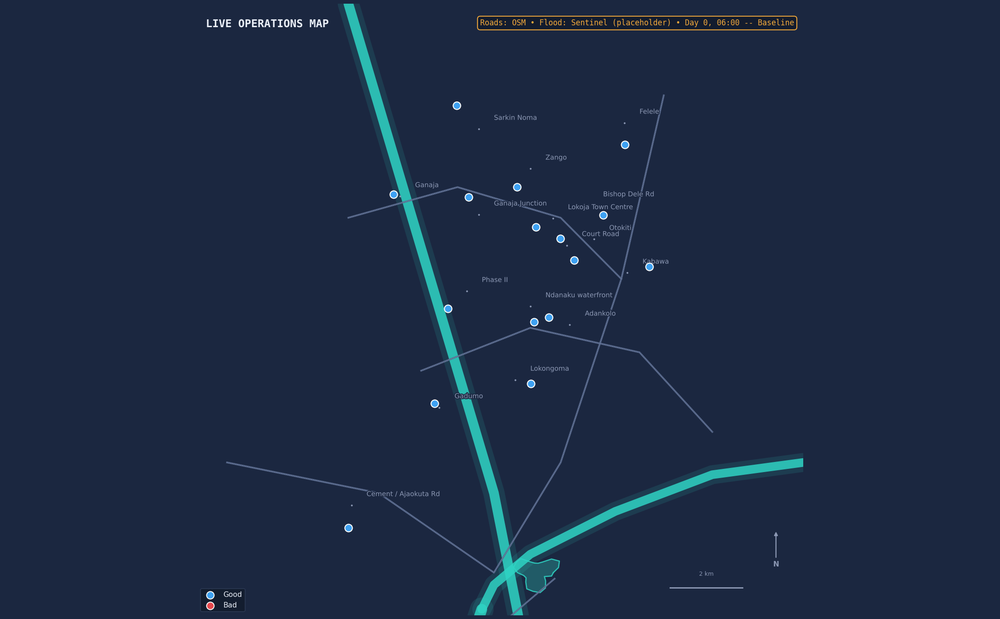

◉
Flood Operations — Lokoja
River Niger & Benue confluence · Kogi State, Nigeria
Active volunteers
—
Alerts (red)
—
This hour
—
Cumulative rain
—
Frame
—
Live operations map
Roads: OpenStreetMap
Flood extent: Sentinel
Field status: NEMA

Day 0, 06:00 — Baseline
Refresh